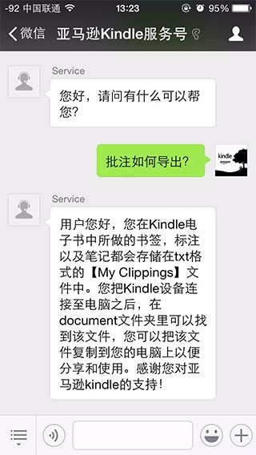

编辑：书伴
在使用 Kindle 的过程中遇到问题，一般可以登陆亚马逊官网通过在线或 400 电话联系人工客服寻求解决方案。现在，亚马逊为使用 Kindle 的小伙伴提供了一个新的客服渠道，亚马逊 Kindle 客服正式入驻微信，使用此服务只需要添加亚马逊 Kindle 服务号”（cn_Kindle）即可。

微信客服服务提供一对一在线咨询, 提供关于 Kindle 电子设备以及亚马逊电子书的使用、下载等一系列售前售后问题的在线服务咨询。微信服务号提供的客服服务时间段为每天 9:00 -20:00，共 11 个小时。其他时间可进行留言，客服上线后会统一进行回复。
使用方法很简单，只需直接发送文字、语音或图片给此公众号，并且内容是跟Kindle相关技术咨询、故障排除、促销信息等，客服会进行回复和解答并协助解决。
如果问题涉及退换货、账户设置、支付设置等敏感信息问题，为保证问题尽快解决，请直接致电 400-817-0100 通过电话处理。
————–
试用体验：
不过这个新的沟通渠道似乎并不像亚马逊官方所说的“有求必应”，发送过去的问题半天得不到客服的回应，所以如果你真的有问题亟待解决，还是建议选用亚马逊“传统”客服沟通渠道，也是最靠谱的和客服沟通方式。通过下面这个链接即可直接到达。
https://www.amazon.cn/gp/help/customer/contact-us
在这里，亚马逊分别提供了邮件、电话回拨、在线聊天三种方式，其中电话回拨方式最为方便快捷，强烈推荐。只要和亚马逊的直营商品有关系的问题都可以立地解决。